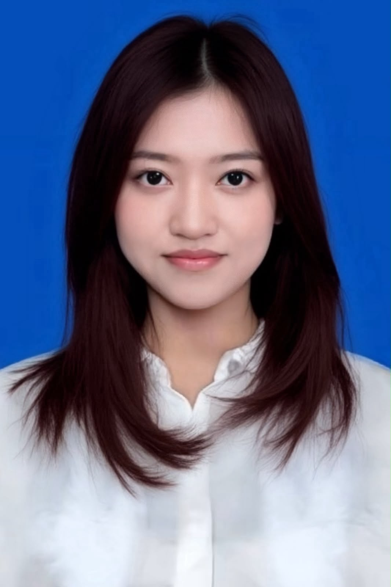
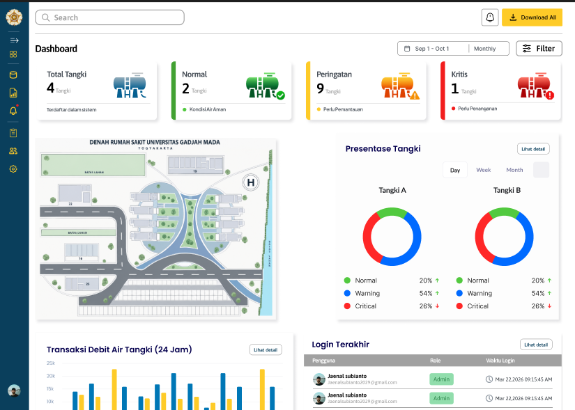
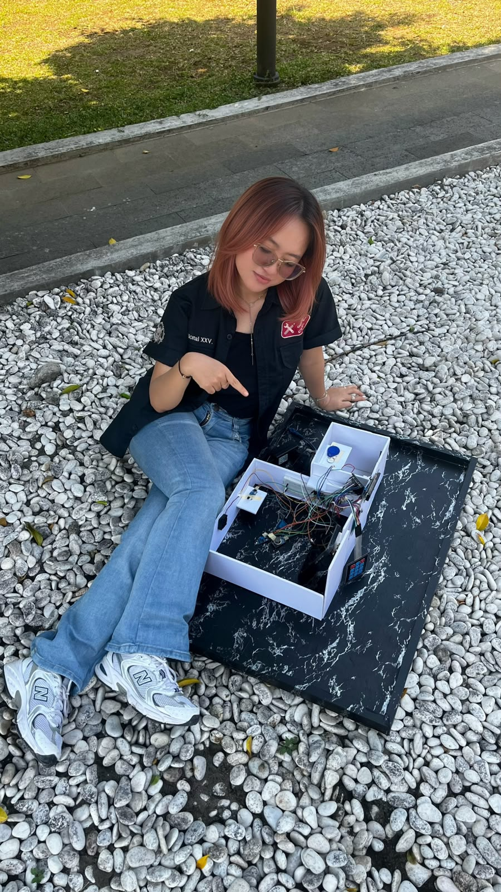
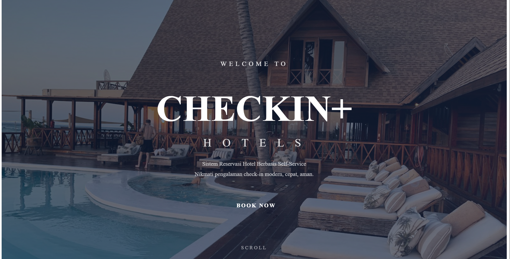
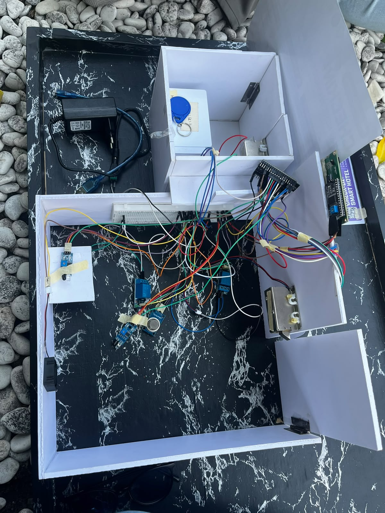
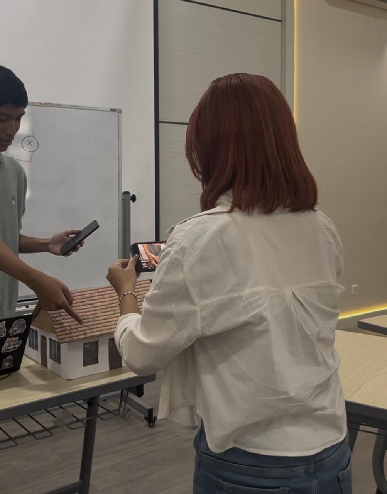
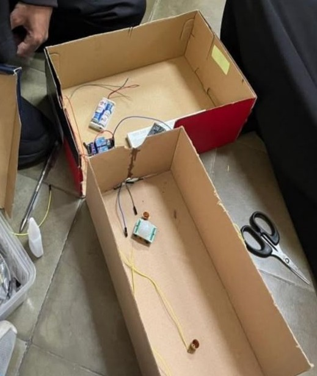
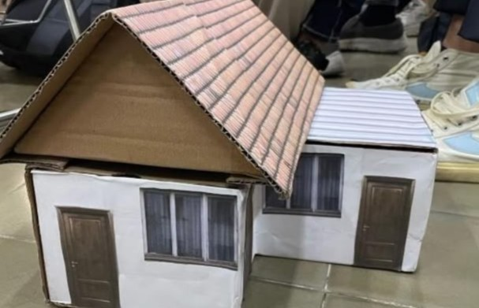
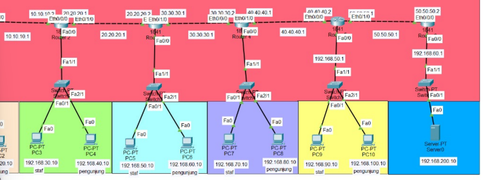

Networking
Network configuration, IP addressing, routing, and troubleshooting.
Cisco Packet Tracer MikroTik WinboxI am interested in information technology, particularly computer networking, internet infrastructure, the Internet of Things (IoT), and the development of internet-based services and applications. I continue to develop my technical skills through various projects and collaborative experiences. Through this portfolio, I showcase my projects, skills, and experiences as part of my ongoing learning and professional development in the field of information technology.

Universitas Gadjah Mada ✨
Destya Nikmatu Maula SaputriI am interested in information technology, particularly computer networking, internet infrastructure, the Internet of Things (IoT), and the development of internet-based services and applications. I continue to develop my technical skills through various projects and collaborative experiences. Through this portfolio, I showcase my projects, skills, and experiences as part of my ongoing learning and professional development in the field of information technology.
Tools and technologies I have worked with.
Network configuration, IP addressing, routing, and troubleshooting.
Cisco Packet Tracer MikroTik WinboxSoftware development, web programming, application development, and version control.
Python HTML CSS GitHub TkinterConnected devices and communication between IoT components.
ESP32 MQTT HTTP Arduino ThingSpeakNetwork traffic analysis, security monitoring, and web application security testing.
Wireshark Burp Suite Nmap SnortLinux command-line basics and web server configuration.
Ubuntu Linux ApacheCreating visual content and designing user interfaces.
Canva FigmaSome of my projects and practical work.
Merancang tampilan dashboard monitoring IoT untuk memantau volume air dan status pompa pada penampung air di RSA UGM. Dashboard dirancang untuk memudahkan pemantauan kondisi tangki melalui visualisasi data secara informatif.
Teknologi:
Mengembangkan sistem pemesanan dan akses hotel mandiri berbasis IoT dengan konsep self-service. Sistem mengintegrasikan website, server, dan perangkat IoT untuk mendukung proses reservasi serta akses kamar secara otomatis.
Teknologi:


Mengembangkan sistem lampu otomatis menggunakan ESP32 dan sensor gerak untuk mengontrol kondisi lampu. Sistem memanfaatkan komunikasi MQTT agar perangkat dapat bertukar data dan menerima perintah secara otomatis.
Teknologi:


Merancang konsep aplikasi untuk membantu pengelolaan dan pemantauan data pemerataan akses internet. Proyek ini bertujuan mendukung pengolahan informasi dan pemantauan distribusi akses internet melalui sistem yang terstruktur.
Teknologi / Tools:Merancang dan mengonfigurasi topologi jaringan menggunakan Cisco Packet Tracer. Proyek mencakup pengaturan IP Address, konfigurasi routing, serta pengujian konektivitas untuk memastikan komunikasi antarperangkat berjalan dengan baik.
Teknologi:
Mengembangkan program pendaftaran janji temu dokter berbasis Python untuk membantu proses pendaftaran dan pengelolaan jadwal konsultasi pasien. Program dirancang untuk mempermudah pengaturan data pendaftaran secara lebih terstruktur.
Teknologi:Feel free to contact me for projects, collaboration, or professional opportunities.